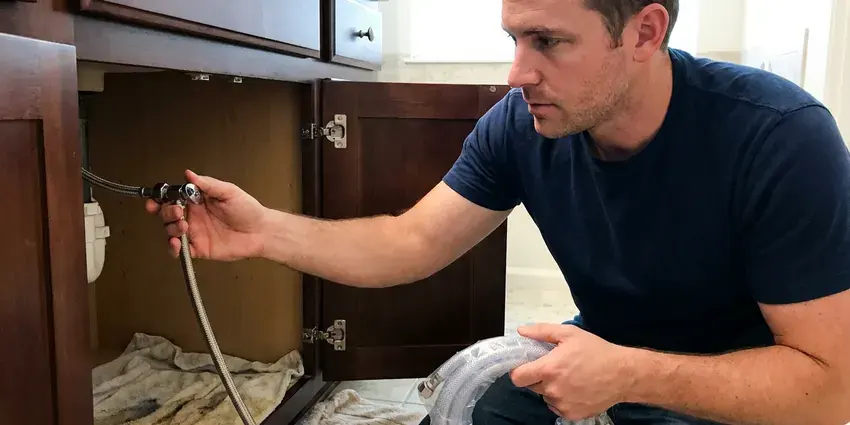

Drain Repairs in Moore, OK
For dependable drain repairs throughout Moore, OK, trust the experienced plumbers at JBK Plumbing.
- Licensed & Insured
- Fast, Local Service
- Local Moore Experts
- Camera-Verified Diagnosis
Need Drain Repairs You Can Trust in Moore, OK.
We bring cameras, augers and replacement parts so most drain repairs are finished in a single visit.
Your Go-To Experts for Drain Repairs in Moore, OK
JBK Plumbing specializes in all types of drain repairs across Moore, OK. From simple clogs to complex pipe damage, our team uses proven diagnostic tools like sewer cameras to accurately identify the problem and provide lasting solutions.
Our expertise includes:
- Install new drain lines to code requirements.
- Repair or replace cracked and leaking drain pipes.
- P-trap, tailpiece and slip-joint replacement under sinks and vanities

Additional Plumbing Repair Services in Moore, OK
We offer expert plumbing repair services across Moore, OK to stop leaks, clear blockages, and keep every fixture working the way it should.




Water Leak Repair service for Moore homeowners


Customers
Why Choose JBK Plumbing for Drain Repairs in Moore, OK?
We pride ourselves on honest service and effective repairs, helping homeowners in Moore avoid the headaches and potential water damage that come with neglected drain problems.
- Advanced Tools, We use state-of-the-art equipment like video inspection cameras and hydro-jetting machines for precise diagnostics and effective repairs.
- Local Knowledge, Our team understands the plumbing challenges faced by homes in Oklahoma, such as soil movement and mineral buildup.
- Lasting Solutions, We focus on providing lasting repairs that address the root cause of your drain issues, not just temporary fixes.
Citywide Coverage
Our commitment to Moore residents means complete coverage for all your drain repair needs. From the historic districts to newer developments, our teams are familiar with the various plumbing systems and can quickly respond to your service requests.
Experienced Team
Each technician is an expert in diagnosing complex drain issues, from identifying pipe materials to understanding how local soil conditions in Moore might affect underground lines.
Safety-First Approach
We use drop cloths, shoe covers and containment when opening drain lines indoors. Any wastewater is cleaned up and the work area is sanitized before we leave.
Trusted Certified Moore Plumbing Services Professionals
At JBK Plumbing, we take pride in providing licensed, certified plumbing services throughout Moore, OK. Backed by leading industry credentials, our experienced plumbers combine technical skill with genuine customer care. Whether it is repair, installation, or maintenance, we follow strict safety and quality standards to deliver lasting results you can trust.
Call Us Now PHCC Plumbing Contractor Recognition
PHCC Plumbing Contractor Recognition Better Business Bureau (BBB) Accreditation
Better Business Bureau (BBB) Accreditation Angi Certified Pro
Angi Certified Pro ISO 9001 Quality Management Certification
ISO 9001 Quality Management CertificationDependable Drain Repair Services in Moore, OK
Kitchen Sink Drain Repair in Moore, OK
Kitchen drains are prone to clogs from food particles, grease and soap scum. If your kitchen sink is draining slowly or not at all in Moore, OK, JBK Plumbing can help. We clear blockages, repair leaks under the sink and address issues with garbage disposals, so your kitchen plumbing is working properly.

Leaking Drain Pipe Repair in Moore, OK
Leaking drain pipes can cause serious water damage and mold growth if not addressed quickly. Causes often include corrosion, shifting foundations or damage from root intrusion. JBK Plumbing performs precise leak detection using acoustic and thermal imaging equipment. We repair leaks by patching small holes or replacing damaged sections of PVC, cast iron or copper piping, ensuring a watertight seal. Our repairs meet all local plumbing codes.
Emergency Drain Repair in Moore, OK
A drain line that bursts under a sink or inside a wall can soak cabinets and flooring quickly. When you call with an active leak, we prioritize the visit and help you stop the flow until we arrive. Once there, we isolate the damaged section and make a permanent repair whenever possible. If drywall or flooring is wet, we let you know so you can address it before mold sets in.
Sewer Line Drain Repair in Moore
Issues with your main sewer line can impact all drains in your home. Common problems include tree root intrusion, cracks from ground movement or pipe collapses. We offer complete sewer line diagnostics, including video inspections to assess the damage. Depending on the severity, we can use trenchless methods like pipe lining or pipe bursting, which minimize yard disruption, or traditional excavation for severe damage. We make sure your main drain system is fully functional.
Commercial Drain Repairs in Moore
Businesses in Moore rely on efficient plumbing, and drain issues can significantly impact operations. Our commercial drain repair services address common problems like grease trap clogs in restaurants, industrial pipe blockages and high-volume restroom drain issues. We provide quick response times to minimize downtime and offer robust solutions designed for commercial wear and tear. Our team is experienced with various commercial plumbing systems and compliance requirements.
Broken Drain Pipe Repair in Moore, OK
Broken drain pipes, usually caused by shifting soil, tree root intrusion or age, require prompt attention. In Moore, OK, our team can diagnose the exact location and extent of the damage using camera inspections. We then perform targeted repairs, which might involve replacing a section of pipe with durable PVC or cast iron, for a long-term fix.
Commercial Drain Repair in Moore
Restaurants, salons, offices and medical suites all need drains that keep working during business hours. We repair grease-laden kitchen lines, floor sinks, mop sink drains and restroom fixtures. We can schedule work early or after closing to keep your doors open. Our team also helps you set up a maintenance plan so problems are caught before they interrupt service.

Sewer Drain Line Repair in Moore
The main sewer drain line carries all wastewater from your home. Issues like blockages, cracks or collapses in this line can lead to whole-house plumbing problems. Our plumbers in Moore are experts in sewer drain line repair, using trenchless methods where possible to minimize disruption to your property, or traditional excavation when necessary for severe damage.
Drain Repair Near Me in Moore, OK
Our local presence in Moore means we understand the plumbing challenges faced by homes and businesses in the area. Whether you're dealing with a minor clog or a major pipe repair, our team is always nearby and prepared to deliver top-quality drain repair solutions.
Local plumbers also understand the water quality, home ages and pipe materials common in this area. That experience helps us spot the cause of a recurring drain problem fast. Give us a call and we will get your drains flowing again.
JBK Plumbing at a Glance
- Fully licensed plumbing team covering Moore, OK
- 24/7 emergency service with same-day scheduling
- Clear written estimates, no hidden fees
- 4.8-star rated by 318+ Oklahoma customers
Moore Map
Moore Information
- Population
- 63,470
- Area codes
- 405/580/918
- Service area
- Moore and communities within 40 miles
- Nearby
- Norman, Oklahoma City, Midwest City, Edmond
Mineral scale inside drain lines traps hair and grease, so worn fittings and narrowed pipes in Moore, OK can fail earlier than expected. Homeowners around Moore with hard water often add a softener to extend the life of water heaters and appliances.
Expert Services
Trust our professionals for reliable JBK Plumbing solutions in Moore, OK.
Our Specialized Plumbing Services in Moore, OK
At JBK Plumbing, we provide a complete range of plumbing services across Moore, OK. From leak detection to full system installations, our team ensures fast, precise, and affordable service for both residential and commercial properties. Explore our core services below:


How Our Drain Repair Process Works in Moore, OK
We keep the process simple so your drains are working again fast.
Request a Quote
Call (405) 507-8396 or fill out our online form to schedule your drain repair service. We'll gather initial details about your issue and set up a convenient appointment time.
Diagnosis & Plan
Our experienced technician will arrive at your property to perform a detailed inspection, often using video cameras to precisely locate the problem. We'll then explain the issue and propose the most effective repair plan.
Expert Repair
Once you approve the plan, our team will carry out the repair using appropriate tools and techniques, from hydro-jetting to pipe replacement. We work efficiently and meticulously to restore your drains.
Frequently Asked Questions About Drain Repairs in Moore
The cost of drain repairs in Moore, OK can vary widely, typically ranging from $150 for a simple clog removal to over $3,000 for complex main sewer line repairs. Factors like the type of drain, severity of the issue and access to the pipes all affect the final price. We provide a detailed estimate after a full inspection.
JBK Plumbing stands behind our work. We offer a warranty on our drain repair services, which varies depending on the type of repair and parts used. Our technicians will provide details on the specific warranty that applies to your service.
Hydro-jetting is a powerful drain cleaning method that uses high-pressure water to clear out stubborn blockages, grease buildup, mineral deposits and even tree roots from your pipes. It is commonly used for severe clogs or as a preventive measure to thoroughly clean drain lines, leaving them almost like new.
Tightening a loose slip nut or replacing a plastic trap is a reasonable DIY job. If the leak is from a cracked tailpiece, a corroded metal drain or inside a wall, a plumber can make a lasting repair and check for hidden damage.
A dry trap, a cracked drain fitting, a failed wax ring or a blocked vent can all let sewer gas into a room. We locate the source with a smoke test or visual inspection and fix it.
Drain cleaning removes a blockage from an otherwise sound pipe. Drain repair fixes the pipe itself, such as a crack, bad slope, broken fitting or missing vent. Many recurring clogs need repair, not more snaking.
Minor drain repairs, such as clearing a simple clog, typically do not require a permit in Moore. However, significant repairs involving altering or replacing major sections of your plumbing system, especially main sewer lines, may require permits. JBK Plumbing handles all necessary permit applications for these projects.
We work with all standard drain pipe materials found in Oklahoma homes, including PVC, ABS, cast iron and copper. Our repairs and replacements use high-quality, code-compliant materials from trusted manufacturers for durability and longevity.
What People Are Saying About Our Plumbing Experts?

Sofia M.
Two new toilets installed in one visit, no mess left behind, and the tech even adjusted a faucet he noticed was dripping. Fair pricing and really friendly.
Toilet Installation · Shawnee, OK
Emily R.
I called JBK Plumbing for plumbing repair, and the technician was fast, polite, and thorough. They explained the problem clearly and fixed it the same day. I will definitely hire them again. Highly recommended!
Plumbing Repair · Oklahoma City, OK
Mark T.
When our office needed drain cleaning, JBK Plumbing provided quick, reliable service. The plumber arrived on time and made sure every drain flowed perfectly before leaving. Very satisfied.
Drain Cleaning · Midwest City, OK
Robert G.
The trenchless sewer replacement saved our front yard. They walked us through the camera inspection footage first so we knew exactly what we were paying for.
Sewer Line Replacement · Midwest City, OK
Patricia H.
We had a slab leak that two other companies could not find. JBK Plumbing located it in under an hour, explained our options, and the price matched the quote to the dollar.
Slab Leak Repair · Moore, OKLaura S.
I scheduled a water heater replacement, and the team made the process smooth and affordable. The new unit works perfectly, and they cleaned up after completing the job.
Water Heater Replacement · Midwest City, OK